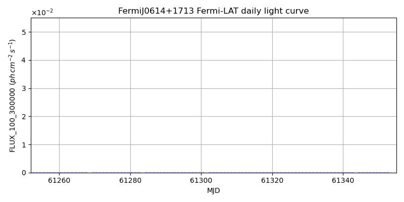
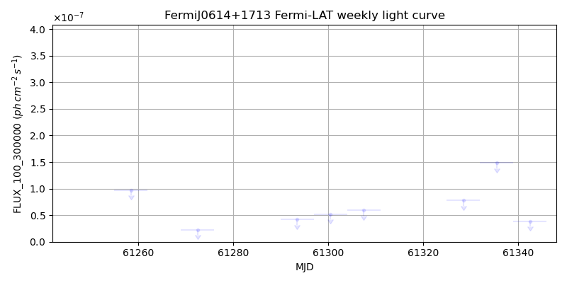
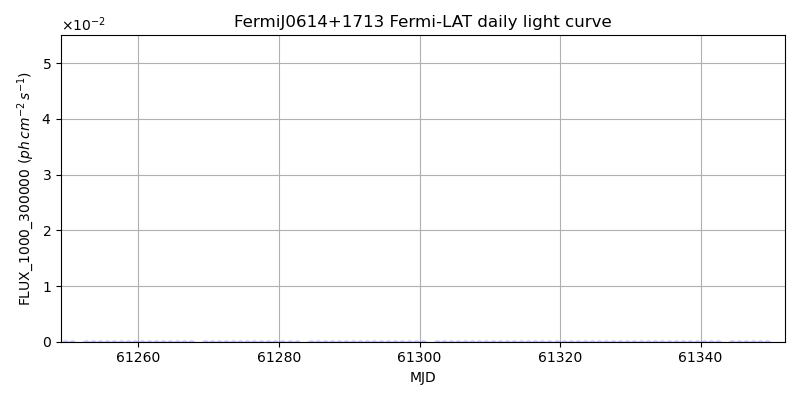
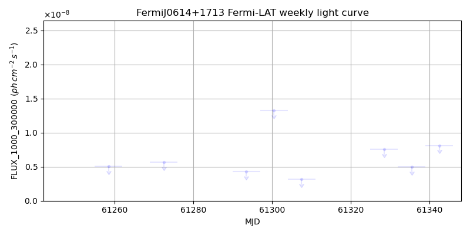

LAT Lightcurve site: https://fermi.gsfc.nasa.gov/ssc/data/access/lat/msl_lc/source/Fermi_J0614p1713
NED: Query
Time of last update of this page: UT: 2026-11-13 16:17 (MJD: 61357.679)
| Property | Value |
|---|---|
| R.A. | 6:14:31.20 |
| Dec. | 17:13:48.0 |
| z | 0.000 |
| 3FGL SpectrumType | |
| 3FGL PL Index | -1.00 |
| 3FGL Flux_100_300000 | -1.00e+00 |
| 3FGL Flux_1000_300000 | -1.00e+00 |
| 3FGL Flux >200 GeV | -1.00e+00 |
| 3FGL Extrap. Crab >200 GeV | -1.00 |
| 3FGL Flux After EBL Absorption >200GeV | -1.00e+00 |
| 3FGL EBL Crab Fraction >200GeV | -1.00 |

| MJD | dMJD | Flux | dFlux | Frac3FGL | FracCrab>200GeV | EBLFracCrab>200GeV |
|---|---|---|---|---|---|---|
| 61348.50 | 0.50 | 1.07e-07 | 0.00e+00 | 0.00 | 0.00 | -0.00 |
| 61349.50 | 0.50 | 3.61e-07 | 0.00e+00 | 0.00 | 0.00 | -0.00 |
| 61350.50 | 0.50 | 1.33e-07 | 0.00e+00 | 0.00 | 0.00 | -0.00 |
| 61351.50 | 0.50 | 7.74e-07 | 0.00e+00 | 0.00 | 0.00 | -0.00 |
| 61352.50 | 0.50 | 2.17e-07 | 0.00e+00 | 0.00 | 0.00 | -0.00 |

| MJD | dMJD | Flux | dFlux | Frac3FGL | FracCrab>200GeV | EBLFracCrab>200GeV |
|---|---|---|---|---|---|---|
| 61300.50 | 3.50 | 5.19e-08 | 0.00e+00 | 0.00 | 0.00 | -0.00 |
| 61307.50 | 3.50 | 5.95e-08 | 0.00e+00 | 0.00 | 0.00 | -0.00 |
| 61328.50 | 3.50 | 7.82e-08 | 0.00e+00 | 0.00 | 0.00 | -0.00 |
| 61335.50 | 3.50 | 1.48e-07 | 0.00e+00 | 0.00 | 0.00 | -0.00 |
| 61342.50 | 3.50 | 3.85e-08 | 0.00e+00 | 0.00 | 0.00 | -0.00 |

| MJD | dMJD | Flux | dFlux | Frac3FGL | FracCrab>200GeV | EBLFracCrab>200GeV |
|---|---|---|---|---|---|---|
| 61348.50 | 0.50 | 2.63e-08 | 0.00e+00 | 0.00 | 0.00 | -0.00 |
| 61349.50 | 0.50 | 5.85e-08 | 0.00e+00 | 0.00 | 0.00 | -0.00 |
| 61350.50 | 0.50 | -1.00e+00 | 0.00e+00 | 0.00 | 0.00 | -0.00 |
| 61351.50 | 0.50 | 2.23e-08 | 0.00e+00 | 0.00 | 0.00 | -0.00 |
| 61352.50 | 0.50 | 1.90e-08 | 0.00e+00 | 0.00 | 0.00 | -0.00 |

| MJD | dMJD | Flux | dFlux | Frac3FGL | FracCrab>200GeV | EBLFracCrab>200GeV |
|---|---|---|---|---|---|---|
| 61300.50 | 3.50 | 1.32e-08 | 0.00e+00 | 0.00 | 0.00 | -0.00 |
| 61307.50 | 3.50 | 3.18e-09 | 0.00e+00 | 0.00 | 0.00 | -0.00 |
| 61328.50 | 3.50 | 7.55e-09 | 0.00e+00 | 0.00 | 0.00 | -0.00 |
| 61335.50 | 3.50 | 4.97e-09 | 0.00e+00 | 0.00 | 0.00 | -0.00 |
| 61342.50 | 3.50 | 8.11e-09 | 0.00e+00 | 0.00 | 0.00 | -0.00 |
--------------------------------------------------------- Using user-supplied coords: 6:14:31.20 17:13:48.0 2000 --------------------------------------------------------- FLWO UT night of: 2026-11-14 Local Sid. @ Midnight: 03:09 Sunset (-15.0) (local, UT): 18:35 01:35 Sunrise (-15.0) (local, UT): 05:42 12:42 Moonrise (local, UT): Moonset (local, UT): 20:50 03:50 Moon phase: 0.22 --------------------------------------------------------- AzTime LSID UT Obj_el Obj_az Mn_el Mn_az Sep. --------------------------------------------------------- 18:35 21:44 01:35 -20.2 53.3 20.1 218.2 165.9 19:05 22:14 02:05 -14.9 58.4 16.0 223.7 165.8 19:35 22:44 02:35 -9.3 63.0 11.6 228.6 165.7 20:05 23:14 03:05 -2.2 67.3 6.9 233.2 165.6 20:35 23:44 03:35 2.7 71.2 2.0 237.3 165.5 21:05 00:14 04:05 8.7 75.0 -2.2 241.2 165.4 21:35 00:44 04:35 14.9 78.7 -9.0 244.8 165.2 22:05 01:14 05:05 21.2 82.3 -14.6 248.2 165.1 22:35 01:44 05:35 27.5 85.9 -20.4 251.4 164.9 23:05 02:14 06:05 33.9 89.7 -26.2 254.5 164.7 23:35 02:44 06:35 40.3 93.8 -32.1 257.5 164.6 00:05 03:14 07:05 46.7 98.5 -38.1 260.6 164.3 00:35 03:45 07:35 53.0 103.9 -44.2 263.8 164.1 01:05 04:15 08:05 59.1 110.6 -50.2 267.1 163.9 01:35 04:45 08:35 64.9 119.7 -56.3 270.9 163.7 02:05 05:15 09:05 70.0 132.8 -62.4 275.3 163.4 02:35 05:45 09:35 74.0 152.5 -68.4 281.1 163.1 03:05 06:15 10:05 75.6 179.4 -74.2 289.9 162.9 03:35 06:45 10:35 74.1 206.5 -79.6 306.2 162.6 04:05 07:15 11:05 70.2 226.5 -83.2 343.5 162.3 04:35 07:45 11:35 65.1 239.8 -82.1 35.1 162.0 05:05 08:15 12:05 59.3 249.0 -77.4 61.2 161.7 05:35 08:45 12:35 53.2 255.9 -71.8 73.4 161.4 05:42 08:52 12:42 51.9 257.1 -70.5 75.2 161.4 --------------------------------------------------------- Dark hours >55 deg.: 4.69 srcstart (UT): 2026-11-14 07:45 srcend (UT): 2026-11-14 12:26